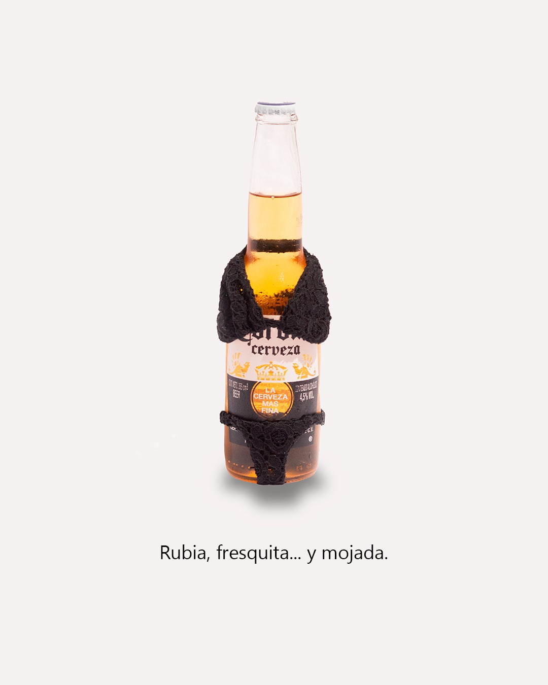
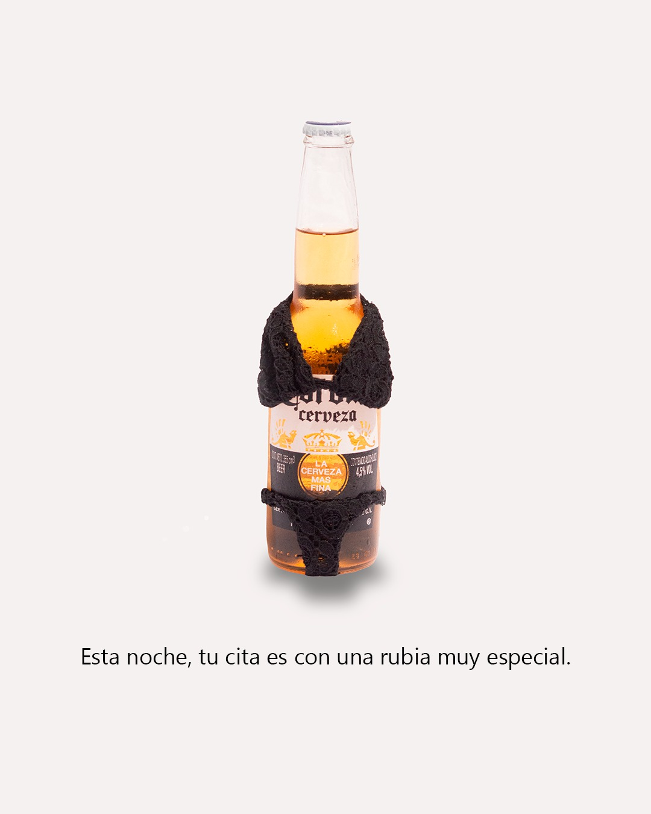
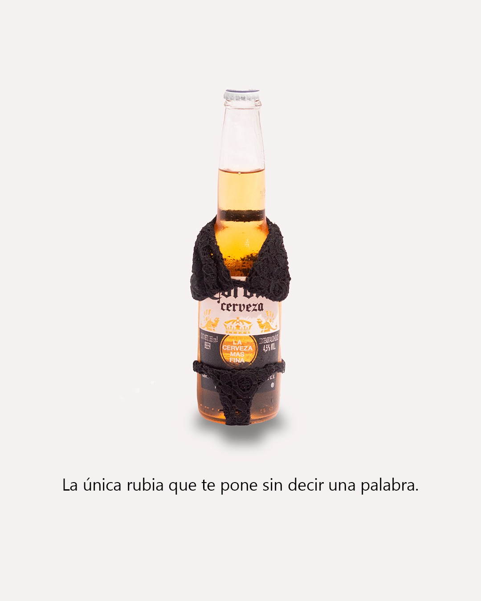

Corona
Creative Direction · Art Direction · Fashion Design · Photography · Branded Content
En este proyecto decidí llevar el universo de Corona a un terreno más atrevido, con un toque de humor negro.
Diseñé y confeccioné un bikini a medida para un botellín de Corona, transformando la botella en un icono visual inesperado y divertido. Posteriormente realicé una sesión fotográfica con una estética limpia y editorial, finalizando el proyecto con la edición y el retoque en Photoshop.

El concepto se completa con cuatro titulares de tono irónico y descarado que juegan con el doble sentido y el humor más canalla. La intención era explorar un tipo de comunicación que se aleja de lo políticamente correcto para abrazar un lenguaje atrevido, sarcástico y con potencial viral, alineándose con la tendencia de muchas marcas que buscan generar conversación en redes.
El resultado es un ejercicio creativo que fusiona moda, humor y branding en una pieza visual tan refrescante como la propia cerveza.

